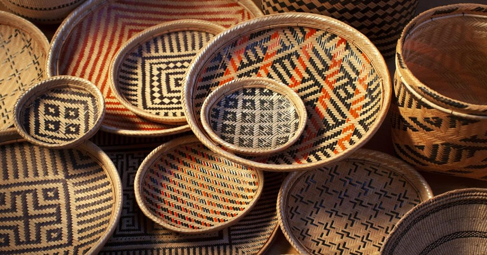
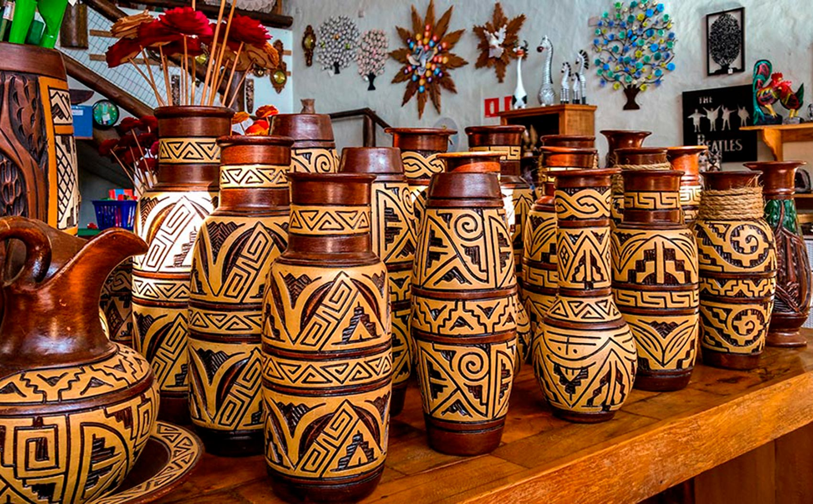
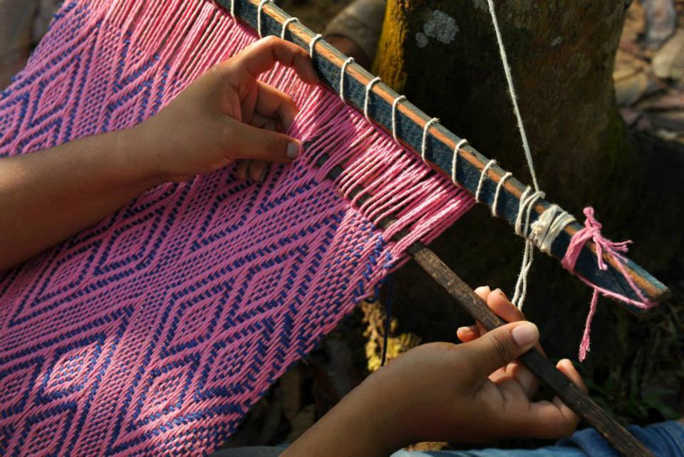
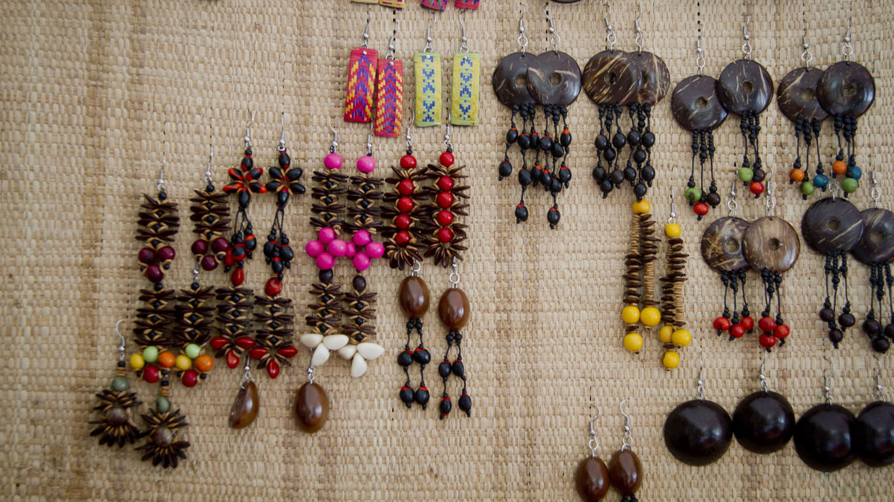
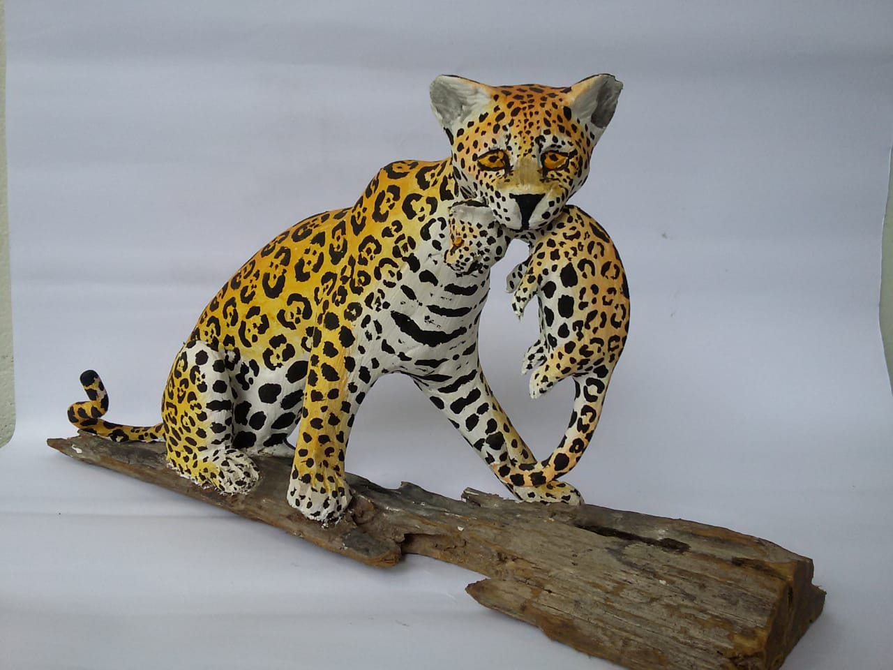
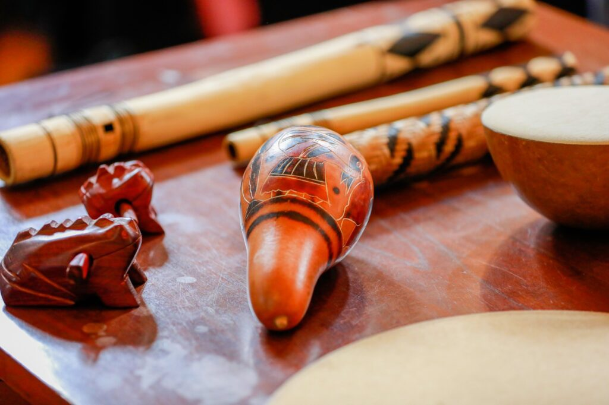

18 de junho de 2024
A cestaria amazônica é uma forma de arte indígena ancestral que floresceu na região amazônica ao longo de milhares de anos, demonstrando uma rica tradição cultural e conhecimento profundo da natureza local. Essas cestas são feitas principalmente de fibras vegetais, como a palha de buriti, tucumã e outras plantas nativas, utilizando técnicas tradicionais transmitidas de geração em geração.
A cestaria amazônica desempenha um papel crucial na vida das comunidades locais, não apenas como uma expressão artística, mas também como um meio de subsistência. As cestas são utilizadas para uma variedade de finalidades, desde o transporte e armazenamento de alimentos até rituais cerimoniais e decoração.
Cada comunidade indígena da Amazônia tem seu próprio estilo distintivo de cestaria, muitas vezes refletindo a fauna, flora e paisagens únicas de sua região. Os padrões e desenhos intricados nas cestas muitas vezes carregam significados simbólicos, transmitindo histórias, mitos e conhecimentos tradicionais do povo.
No entanto, apesar da sua importância cultural e econômica, a cestaria amazônica enfrenta desafios como a perda de habitat, mudanças climáticas e pressões econômicas. Preservar e promover essa forma de arte não apenas valoriza a cultura indígena, mas também contribui para a conservação da biodiversidade e sustentabilidade na região amazônica.
18 de junho de 2024
 A cerâmica amazônica é uma expressão artística e cultural que remonta a milhares de anos na região. Feita principalmente por povos indígenas, essa forma de arte utiliza técnicas tradicionais e materiais encontrados na Amazônia, como argila e pigmentos naturais. A cerâmica amazônica não é apenas uma manifestação estética, mas também uma forma de preservar a identidade cultural e transmitir conhecimentos ancestrais sobre a relação entre os povos indígenas e o ambiente ao seu redor.As peças de cerâmica amazônica variam em forma, tamanho e estilo, refletindo a diversidade cultural das diferentes etnias da região. Muitas vezes, as cerâmicas são decoradas com padrões geométricos ou figuras inspiradas na fauna, flora e mitologia local, carregando significados simbólicos profundos para as comunidades indígenas.
Além de seu valor cultural, a cerâmica amazônica desempenha um papel importante na economia das comunidades indígenas, muitas vezes sendo comercializada como artesanato em mercados locais e internacionais. No entanto, as práticas modernas de extração de recursos naturais e o desenvolvimento descontrolado representam desafios para a preservação da cerâmica amazônica e das tradições que a cercam.
Preservar e promover a cerâmica amazônica não apenas valoriza a rica herança cultural dos povos indígenas, mas também contribui para a conservação da biodiversidade e para o fortalecimento das comunidades locais, incentivando práticas sustentáveis e o respeito ao meio ambiente.
18 de junho de 2024
A tecelagem é uma técnica milenar que consiste na produção de tecidos a partir do entrelaçamento de fios. Na Amazônia, a tecelagem é uma prática cultural profundamente enraizada nas comunidades indígenas, sendo transmitida de geração em geração. Essa forma de arte não apenas produz vestimentas e objetos utilitários, mas também carrega consigo uma rica expressão cultural, refletindo os mitos, símbolos e identidades das diferentes etnias da região.
Os tecidos amazônicos são tradicionalmente confeccionados a partir de fibras naturais, como algodão, juta, buriti e outras plantas nativas, que são colhidas, preparadas e fiadas manualmente pelas próprias artesãs. Cada comunidade indígena possui suas próprias técnicas e padrões distintivos de tecelagem, resultando em uma grande diversidade de estilos e designs.
Além de sua importância cultural, a tecelagem desempenha um papel econômico significativo nas comunidades amazônicas, muitas vezes sendo uma fonte de renda importante para as famílias. Os tecidos produzidos são frequentemente comercializados em mercados locais e turísticos, contribuindo para a sustentabilidade econômica das comunidades.
No entanto, a tecelagem tradicional enfrenta desafios como a competição com produtos industrializados e a perda de território e recursos naturais. Preservar e promover a tecelagem amazônica não apenas valoriza a cultura indígena, mas também contribui para a conservação da biodiversidade e para o fortalecimento das economias locais, incentivando práticas sustentáveis e o respeito às tradições ancestrais.
18 de junho de 2024
As joias amazônicas são uma expressão única da rica biodiversidade e cultura da região. Elas são criadas com materiais naturais abundantes na Amazônia, como sementes, cascas, penas, madeira e outros elementos encontrados na floresta. Essas joias são muitas vezes produzidas por comunidades indígenas e artesãos locais, utilizando técnicas tradicionais transmitidas ao longo das gerações.
Cada peça de joia amazônica conta uma história, refletindo os mitos, símbolos e tradições das comunidades indígenas. As técnicas de produção podem variar de acordo com o grupo étnico e a região, resultando em uma grande diversidade de estilos e designs únicos.
Além de sua beleza estética, as joias amazônicas desempenham um papel importante na economia das comunidades locais, muitas vezes sendo uma fonte de renda vital para as famílias. Elas também têm um valor cultural significativo, ajudando a preservar as tradições e conhecimentos ancestrais dos povos indígenas.
No entanto, as comunidades que produzem essas joias enfrentam desafios como a perda de habitat, pressões econômicas e a competição com produtos industrializados. Promover e apoiar a produção e comercialização de joias amazônicas não apenas valoriza a cultura indígena, mas também contribui para a conservação da floresta e para o desenvolvimento sustentável das comunidades locais.
18 de junho de 2024
A escultura em madeira é uma forma de arte ancestral que tem sido praticada por comunidades indígenas da Amazônia ao longo de séculos. Utilizando ferramentas simples, como machados, formões e facas, os artistas esculpem a madeira para criar uma variedade de objetos e figuras, desde máscaras cerimoniais até estátuas decorativas e utensílios domésticos.
As esculturas em madeira amazônicas frequentemente incorporam elementos da natureza, como animais, plantas e seres mitológicos, refletindo a profunda conexão espiritual das comunidades indígenas com o ambiente ao seu redor. Cada peça é única, carregando consigo os traços distintivos do estilo e da cultura do artista que a criou.
Além de seu valor estético, as esculturas em madeira desempenham um papel importante na preservação da cultura e tradições das comunidades amazônicas. Elas são frequentemente utilizadas em rituais cerimoniais, festividades e como símbolos de identidade cultural.
No entanto, a escultura em madeira enfrenta desafios, como o desmatamento e a perda de habitat das árvores utilizadas como matéria-prima, bem como a concorrência com produtos industrializados. Promover e apoiar os artistas e artesãos locais que praticam a escultura em madeira não apenas valoriza a cultura indígena, mas também contribui para a conservação da floresta e para o fortalecimento das economias locais, incentivando práticas sustentáveis e o respeito às tradições ancestrais.
18 de junho de 2024
Os instrumentos musicais amazônicos refletem a diversidade cultural e a rica herança dos povos indígenas da região. Eles são feitos com materiais naturais encontrados na floresta, como madeira, sementes, cascas, fibras e peles de animais. Cada instrumento possui um significado cultural e espiritual profundo, muitas vezes utilizado em rituais cerimoniais, festividades e expressões culturais.
Entre os instrumentos musicais tradicionais da Amazônia, destacam-se: